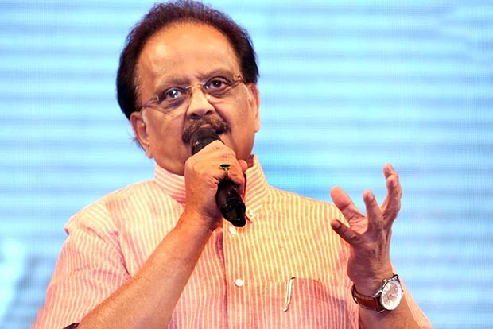
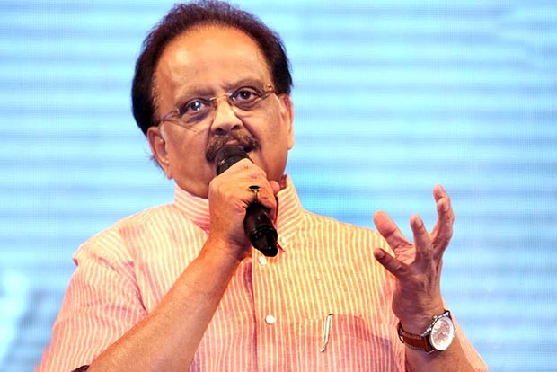
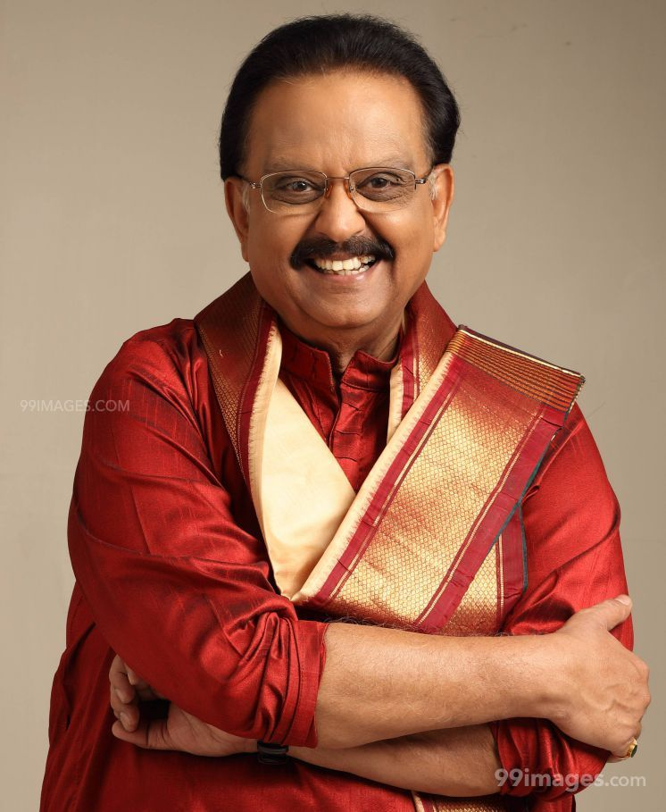
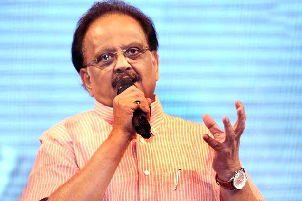

Sripathi Panditaradhyula Balasubrahmanyam (4 June 1946 – 25 September 2020), also referred to as S. P. B. or Balu, was an Indian musician,playback singer, television anchor, music director, actor, dubbing artist,and film producer who worked predominantly in Telugu, Tamil, Kannada, Hindi, and Malayalam films.Widely regarded as one of the greatest singers of India, He won six National Film Awards for Best Male Playback Singer for his works in four different languages; Telugu, Tamil, Kannada,Hindi.Balasubrahmanyam developed an interest in music at an early age, studied musical notations, and learned music. He enrolled at the JNTU College of Engineering Anantapur with the intention of becoming an engineer. He discontinued his studies early due to typhoid and joined as an associate member the Institution of Engineers, Chennai.
Balasubrahmanyam made his debut as a playback singer on 15 December 1966 with Sri Sri Sri Maryada Ramanna, a Telugu film scored by his mentor, S. P. Kodandapani.The first non-Telugu song that he recorded just eight days after his debut Telugu song was in Kannada in 1966 for the film Nakkare Ade Swarga,starring Kannada comedy stalwart T. R. Narasimharaju. He recorded his first Tamil song "Athaanodu Ippadi Irundhu Eththanai Naalaachu", a duet with L. R. Eswari under the musical direction of M. S. Viswanathan for the film Hotel Ramba, which was never released. Other early songs he sang were duets with P. Susheela, "Iyarkai Ennum Ilaya Kanni" in the 1969 film Shanti Nilayam, starring Gemini Ganesh, and "Aayiram Nilavae Vaa" for M. G. Ramachandran in Adimaippenn.[47] His first song with S. Janaki was "Pournami Nilavil Pani Vizhum Iravil" in Kannippenn. He was then introduced to the Malayalam film industry by G. Devarajan in the film Kadalppalam.

Balasubrahmanyam came to international prominence with the 1980 film Sankarabharanam. The film is considered to be one of the best films ever to emerge from the Telugu film industry.Directed by K. Vishwanath, the film's soundtrack was composed by K.V. Mahadevan, and led to an increase in the usage of Carnatic music in Telugu cinema. Not a classically trained singer, he used a "film music" aesthetic in recording the songs.[54] Balasubrahmanyam received his first National Film Award for Best Male Playback Singer for his work. His first work in Hindi films was in the following year, in Ek Duuje Ke Liye (1981), for which he received another National Film Award for Best Male Playback Singer.Balasubrahmanyam began to record more songs in Tamil and Telugu, especially for Ilaiyaraaja with S. Janaki, the trio considered to be highly successful in the Telugu film industry from the late 1970s and throughout the 1980s. The songs were based on classical music, such as in Saagara Sangamam (1983) and Rudraveena (1988), for which both Ilaiyaraaja and Balasubrahmanyam won National Awards for Best Music Director and Best Male Playback Singer respectively.
In the 1990s, he worked with composers such as Vidyasagar, M. M. Keeravani, Hamsalekha, S. A. Rajkumar and Deva among others, but his association with A.R.Rahman turned out be a major success. Balasubrahmanyam recorded three songs for A. R. Rahman in the latter's debut film Roja. He had a long-time association with Rahman right from Roja. Other popular songs include "July Maadham" from Pudhiya Mugam, which also marked the debut of singer Anupama, "Mannoothu Manthayilae" from Kizhakku Cheemayile which was a folk number and he almost sang all songs in the musical love story Duet and "Thanga Thaamarai" from Minsara Kanavu which fetched him, the sixth and latest of his National Film Awards for Best Male Playback Singer to date. Balasubrahmanyam's association with Hamsalekha began after the latter's successful venture Premaloka in Kannada. Balasubrahmanyam sang the most songs for Hamsalekha in Kannada. He received his fourth National Film Award for Best Male Playback Singer for the song "Umandu Ghumandu" from the Kannada film Ganayogi Panchakshari Gavayi (1995), which was a Hindustani classical music-based composition by Hamsalekha.
In 2013, Balasubrahmanyam recorded the title song for Chennai Express – "Chennai Express", singing for the lead actor Shahrukh Khan, under the music direction of Vishal-Shekhar, breaking his 15-year hiatus from Hindi cinema music.In May 2020, SPB crooned a song on humanity titled "Bharath Bhoomi" which was composed by Ilaiyaraaja as a tribute to the people such as police, doctors, nurses and janitors who have been significantly working amid COVID-19 pandemic.[67] The video song was officially unveiled by Ilaiyaraaja through his official YouTube account on 30 May 2020 in both Tamil and Hindi languages.
S. P. Balasubrahmanyam was an Indian playback singer, who was well known for his work in South Indian films. Making his playback singing debut in 1966 through the Telugu film Sri Sri Sri Maryada Ramanna, he sung over 40,000 songs in multiple languages of India.[1][2] During his career he won six National Film Awards, six Filmfare Awards South and one Filmfare Award (resulting from four nominations).The first of his National Award came for his work in the 1979 musical film Sankarabharanam. Two year later he entered the Hindi film industry through Ek Duuje Ke Liye (1981), winning the award for the second time. He also received a Filmfare nomination for Best Male Playback Singer for the film. In the subsequent years, he won the National Film Awards for Saagara Sangamam (1983) and Rudraveena (1988)—both Telugu films. In 1989, he received his first Filmfare Award for Maine Pyar Kiya. He won the first of his four South Filmfare Award for Subha Sankalpam, a film which he produced. His first Filmfare Award in the playback singing category came for Sri Ramadasu (2006), followed by Mozhi (2007) and Aaptha Rakshaka (2010). Balasubrahmanyam was also a recipient of numerous state awards; 25 Nandi Awards—Best Male Playback Singer, Best Music Director, Best Male Dubbing Artist and Best Supporting Actor categories. He has also won four Tamil Nadu State Film Awards and three Karnataka State Film Awards. Other honors for his singing career included Lata Mangeshkar Award, Sangeetha Ganga Award, Film Fans' Association Award. In addition, he was also honoured with Padma Shri (2001) and Padma Bhushan (2011), the fourth and third highest civilian honours by the Government of India. Apart from his singing career, Balasubrahmanyam worked as an actor, music composer, voice actor and film producer.
On 5 August 2020, Balasubrahmanyam tested positive for COVID-19 and was admitted to MGM Healthcare in Chennai. Subsequently, his health deteriorated and he was shifted to the intensive care unit in a critical state. He required a ventilator and extracorporeal membrane oxygenation (ECMO) support. His son Charan provided periodic updates over social media, while members of the Tamil film industry engaged in a mass prayer via Zoom on 20 August and candlelight vigils were held by fans outside the hospital.[81] On 7 September 2020, Balasubrahmanyam tested negative for the coronavirus, although he remained using a ventilator and ECMO. He started showing signs of recovery, including light speech and physical activities.[82] However, the hospital released a statement on 24 September stating that he became "extremely critical" and was on "maximal life support".He died on 25 September 2020 at 1:04 pm (IST) of cardio-respiratory arrest after over a month-long hospitalisation.[84] He was buried at his farm house in Tamaraipakam, Thiruvallur district with state honours on 26 September 2020.